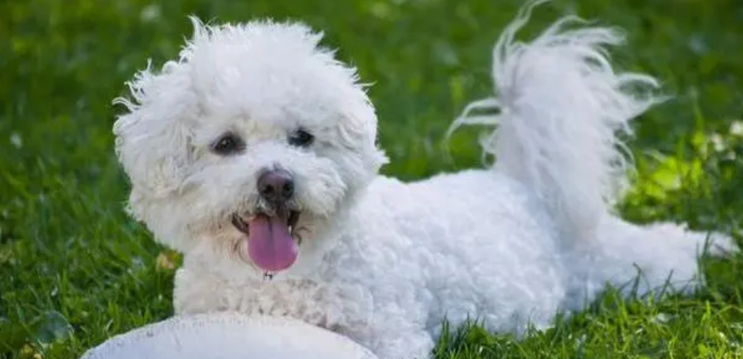
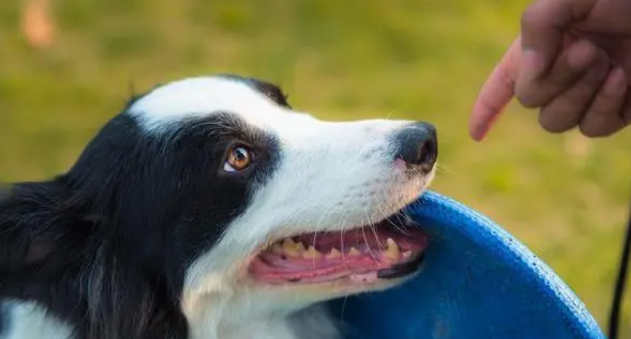
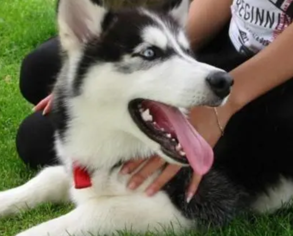

可爱的小比熊
比熊犬是一种常见的小型宠物狗，因为可爱的造型、漂亮柔软的毛发深受人们喜爱。比熊的性格很好，虽然平时比较粘人，不过服从度还是比较高的，加上它很聪明，可以学会很多小技能，所以在讨好主人方面是得心应手。
它们性格温顺，聪明伶俐，对主人忠心耿耿，是非常好的伴侣犬。但是有一点不好的是是：它们不能生育，所以很多人都不愿意养它们。
智商担当——边牧
边牧因为智商高、执行力好而出名成为不少人会选择的狗狗。饲养了边牧，首先在训练方面你会很省心，基本上教了什么学个几天就会，平时听话时对主人也是千依百顺的。但要是它想要的东西主人不给，它就会暗自捣乱，或是自己偷偷地去拿，反正主人不给它偷也会偷到手。
边境牧羊犬步态舒展、平顺、敏捷而不费力。是聪明、警惕而敏感的品种，对朋友非常友善而对陌生人明显地有所保留，所以是一种非常优秀的看门犬。
颜值担当——哈士奇
二哈和上面的边牧完全就是对比，哈士奇是去偷吃也会被发现的类型，完全不会收尾工作，就只会自欺欺狗，不仅胆子小，而且还爱恶狗先告状，主人骂它两句，自己就委屈地哭起来了。不过也正是因为胆小，所以主人的一些命令它不敢不听，吓唬两下就怕得要死，就是用颜值换智商的代表选手。
哈士奇性格温顺，没有攻击性，但是精力非常旺盛，喜欢拆家，外表看起来傻傻的.
苏格兰牧羊犬
苏牧善于分辨，当遇到陌生人的时候都有很强的戒备心理，所以能保护老人和小孩，是能力出众的综合性狗狗。它优雅的外表和健壮的体型，还有长长飘逸的毛发，是不少人多喜欢的外表，它训练好了还可以当作救护犬和导盲犬。对于聪明的狗狗，训练时加上零食，可以达到事半功倍的效果。